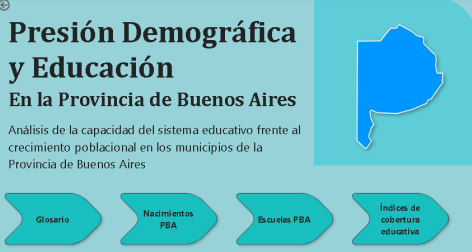

Python-based automation project designed to transform vocabulary exports from ReadEra into AnkiDroid compatible decks, optimizing language learning workflows.
Implemented data cleaning and preprocessing pipelines using pandas, including text normalization, duplicate removal, and term frequency management.
Integrated external APIs for automated translation (EN–ES) and English definition retrieval, merging results into a structured dataset.
Developed a system that generates production-ready CSV files, applying automation best practices and API handling techniques..


Data cleaning and analysis project using SQL on a Glassdoor job postings dataset to improve data quality for downstream analytics.
Implemented data ingestion processes (LOAD DATA INFILE) and removed duplicates using window functions.
Standardized job titles and handled null or inconsistent values to ensure dataset integrity.
Performed structural transformations and schema optimization, utilizing CTEs, aggregations, and UNION operators for EDA.
Generated insights regarding the distribution of roles across Data Analytics, Data Science, and Data Engineering.

Data analysis and Business Intelligence project aimed at evaluating the correlation between population growth and educational system capacity across municipalities in the Province of Buenos Aires.
Integrated and transformed official datasets (births, population, and educational facilities), applying data cleaning, normalization, and relational modeling.
Developed key performance indicators, including the Educational Pressure Index and the Coverage Capacity Index.
Built an interactive Power BI dashboard using DAX measures to support data-driven decision-making and public policy planning.
Exploratory Data Analysis (EDA) project using Python to analyze Argentine football match results (2015–2022) based on Kaggle datasets.
Executed data cleaning, transformation, and feature engineering using pandas and NumPy, handling missing values, time-series variables, and result encoding.
Analyzed relationships between market value, home-field advantage, average age, betting odds, and athletic performance.
Applied statistical visualizations with Matplotlib and Seaborn to identify correlations and trends for performance evaluation and outcome prediction
In this project, I analyze and conclude about the adquisition of the MercadoLibre service, "Mercado Full", in a hardware store commercial mark business, managing with storages, distances, sells, and costs of traslation.